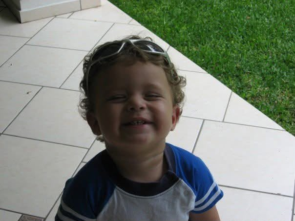
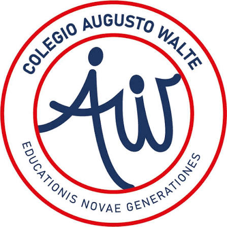
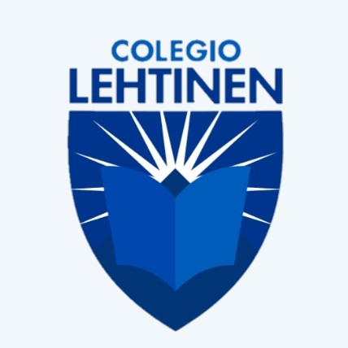

Algo sobre mi

Soy un joven de casi 20 años y actualmente me encuentro cursando la carrera de ingenieria de software y negocios digitales en la ESEN. Elegi esta carrera, ya que es algo que me ha llamado la atencion desde que estoy pequeño, pero no siempre fue mi sueño el ser ingeniero de soft, pues cuando aun no tenia ni idea de la programacion me gustaba mucho dibujar y jugar videojuegos, siendo la de jugar videojuegos mi pasion aun, pero antes de decidir ser estudiante de ing de software queria ser con todo mi ser un tester de la famosa compañia de activision, compañia la cual se encarga de desarrollar los famosos juegos de call of duty.
Actualmente a pesar de estar estudiando la carrera de ing de software y dedicarle la mayor parte de mi tiempo, aun logro reservar espacios al dia para poder disfrutar de mis pasamientos, los cuales son: Jugar videojuegos, ver anime, dormir y ir al gimnasio. Siendo la de jugar videojuegos mi favorita, pues es en lo que soy mejor y desde mi punto de vista en lo que mas mentalidad ganadora tengo.
Mi educacion media


Durante mi educacion media estuve en dos colegios, Colegio Augusto Walte y Colegio Laura Lehtinen, siendo este ultimo en el cual me terminaria graduando. Pues fue el colegio en el cual pude encajar al 100%, ya que en el Walte no rendia bien y aunque es la tipica excusa de los estudiantes, en el Walte habian profesores que la habian agarrado en mi contra, sobretodo mi profesor de matematicas el cual fue el motivo por el que me cambie al Laura Lehtinen, ya que ese profesor le dijo a mis padres que no llegaria lejos y que no me miraba con un futuro, pero me cambie de colegio y logre mostrarle a ese profesor que lo que dijo noo era verdad, pues aqui estoy, estudiando en la ESEN, una de las mejores universidades del pais.